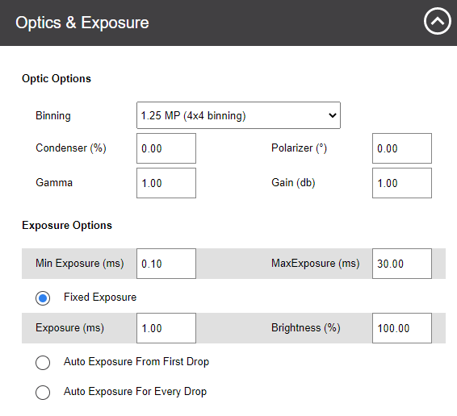
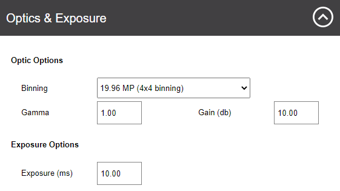
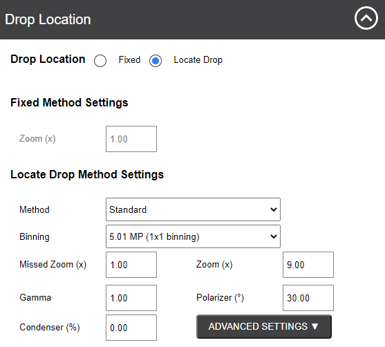
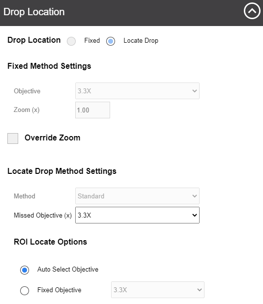
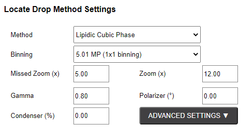
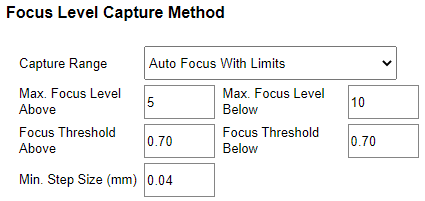
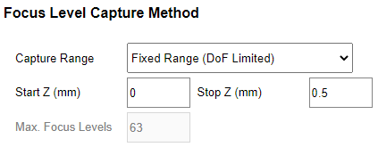
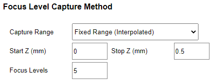

Plate Type List |
Select the plate type you are interested in editing. You can
add new plate types to the list from ROCK MAKER software.
You can export new plate type definitions by clicking More Actions and selecting Export. The system will save your plate type settings in an .XML file format.
You can also use the Import feature to import the file later if needed or if you obtain new plate type settings from FORMULATRIX support.
|
Lightpath |
Select the lightpath of interest. The type of imaging modes available here depends on the imaging types you purchased.
The Visible lightpath is the default imaging setting and is always present.
Each lightpath provides slightly different settings for area numbers 3, 4, and 5. If you select Ultraviolet, the Enable For This Plate Type option will show up.
Enabling this option allows you to image your experiments using UV lightpath.
|
Optics and Exposure |
This area contains settings for the optics components and resolutions along with the exposure settings to use during plate imaging.

Optics and Exposure Options for Visible Lightpath 
Optics and Exposure Options for UV Lightpath
Binning
Affects image quality and size. Using lower binning values will result in larger resolution and higher-quality images.
1x1 binning provides optimum image quality but requires longer processing time, whereas 2x2 binning provides lower image quality but reduced processing time.
Gamma
Affects the contrast of the midtones in the image. Modifying this setting only affects the midtones, without affecting black and white.
However, changing this setting affects both the live image and automatic imaging.
Condenser
The condenser collects light from the Köhler light source and concentrates it onto the well being examined. Values range from 0 - 100%. At 0%, the iris is fully open, and a cone of light is concentrated at a wide-angle.
At 100%, the iris is closed and the light is concentrated in a column of light as opposed to a cone.
Adjusting the condenser value can improve image contrast. Read Visible Light Imaging for more information.
Gain
Used to amplify signal strength in low-light conditions and increase the pixel’s sensitivity to light, in order to make the image brighter.
Polarizer
Determines the angle at which the top polarizer lens is projecting the light from 0 - 3600 relative to the bottom stationary polarizer. When the polarizer is set to 900,
it will be crossed to the bottom polarizer resulting in a black image, except where there are birefringent crystals making it useful to find protein crystals.
Exposure Options
This area determines how exposure settings are used by ROCK IMAGER FT during plate imaging. In Visible imaging, you can opt between Fixed Exposure,
Auto Exposure From First Drop, or Auto Exposure for Every Drop. For UV imaging, only Fixed Exposure is available.
Fixed Exposure: Lets you manually adjust the Brightness and Exposure settings in the corresponding fields.
Set the values accordingly so that the image will have enough contrast and not appear too dark. Auto Exposure from First Drop: ROCK IMAGER FT will find the optimum exposure and brightness on the first drop on the plate and use
those exposure settings for every drop on the plate thereafter. Auto Exposure for Every Drop: ROCK IMAGER determines the optimum exposure and brightness for each drop before imaging each individual drop on a plate.
This is the most common setting.
Note
The exposure settings for each drop can be different depending on the conditions of each drop.
|
Drop Location |
Drop Location settings determine how ROCK IMAGER executes the Drop Location algorithm for the selected plate type.
Options may vary depending on the imaging methods you purchased.

Drop Location Options for Visible Lightpath 
Drop Location Options for Ultraviolet Lightpath
ROCK IMAGER FT can execute Drop Location in two ways: Fixed method and Locate Drop method.
Fixed Method
Selecting Fixed tells ROCK IMAGER FT to use the drop positions defined in the Drop Positions panel when imaging an experiment.
If the selected plate type has more than one drop per well, you can instruct the system to image each drop on the well using
different zoom settings by selecting the Override Zoom check box.
Locate Drop Method
This method instructs ROCK IMAGER FT to run the Locate Drop algorithm before capturing images. Before imaging, the system will perform
an overview using the zoom value defined in the Zoom box and the objective (for UV lightpath) from the Objective list.
The system will find a drop location using these exact settings.
Note
The Objective and Zoom options are only available if your hardware supports continuous zoom or objective lenses.
The Missed Zoom option is available when using the Visible lightpath and Locate Drop method. If ROCK IMAGER FT fails to locate the drop using the Locate Drop algorithm,
the Missed Zoom value will be used to image the drop. The smallest possible value is 1 and the highest is 12.
Locate Drop Method Settings
When using the Locate Drop method, you can further customize how to run the Drop Location algorithm.

From the Method box, you can choose between Standard and Lipidic Cubic Phase (LCP). The LCP method instructs ROCK IMAGER FT on how to locate drops on an LCP or glass plate.
The other fields determine the optics and camera settings used while the system is locating a drop before imaging.
Advanced Settings Option for Standard Method
Min. Length (µm): Controls the minimum number of µm in a blob for that blob to count as a drop. Max. Length (µm): Controls the maximum number of µm in a blob for that blob to count as a drop. White Pixel Min: The minimum range of pixel intensities that maps to white when converting a sobel image to a binary image. White Pixel Max: The maximum range of pixel intensities that maps to white when converting a sobel image to a binary image. Open Iterations: Determines the number of iterations for the system to run when opening the image in preparation for drop location. Max. Aspect Ratio: The maximum ratio between the largest and the smallest Feret diameter of the blob that represents the drop.
Advanced Settings Options for LCP Method
Min. Drop Size (µm): Determines the minimum size of a drop. Max. Drop Size (µm): Determines the maximum size of a drop. Drop White Pixel Min: Determines the minimum size of a drop, measured in pixels. Drop White Pixel Max: Determines the maximum size of a drop, measured in pixels. Drop Open Iterations: Determines how round an object must be to be recognized as a drop. LP Open Iterations: Determines how round an object must be to be recognized as a drop. LP White Pixel Min: Determines the minimum size of a lipid phase, measured in pixels. LP White Pixel Max: Determines the maximum size of a lipid phase, measured in pixels.
|
Focus Level |
Think of Focus Level as a capture range. These settings dictate how the system images a drop once it locates one and adjust the number of focus levels acquired.
You can select Auto Focus with Limits, Fixed Range (DoF Limited), or Fixed Range (Interpolated).
Auto Focus with LimitsRuns the Auto Focus algorithm on the drop to pinpoint the best focus level for the drop on the Z axis. Once the focus level is determined, the system captures images above and below this point, called “slices”.
The slices are analyzed and compiled by ROCK IMAGER Processor into Extended Focus Image (EFI), which is the default image displayed in ROCK MAKER.
Note
Auto Focus with Limits is used when the Z position of the drop is inconsistent across the plate. This can be used for LCP and hanging drop experiments.

There are five settings that dictate how slices are acquired:
Max. Focus Level Above and Max. Focus Level Below determine the absolute number of slices to be taken above and below the best focus level, respectively.
Note
While acquiring too many focus levels will increase the drop details, it will also result in a longer imaging time.
Focus Threshold Above and Focus Threshold Below set the focus threshold for slices relative to the best focus level. For example,
when the Focus Threshold Above value is set to 7, all slices that are above the best focus level, and are at least 70% in focus, will be saved.
For this particular setting, a larger threshold value will result in fewer slices acquired, and a smaller number will result in more slices.
ROCK IMAGER FT takes as many slices as is defined by the Max. Focus Levels or Focus Threshold.
Whichever of these limits is met first by the system will determine the total number of slices acquired
Min. Step Size (mm): Limits the number of slices during the auto-focus plate imaging. The default value is 0.04 mm.
Fixed Range (DoF Limited)Using this option, ROCK IMAGER FT will capture slices along the Z axis between the start and stop heights and also
determine the best number of slices to take based on the Depth of Field (DOF) of the optics in use.

The three settings below the Capture Range box dictate how slices are captured.
The Start Z (mm) and Stop Z (mm) values determine the range along the Z axis where the system captures slices of the drop.
The Max. Focus Levels value equates to how many slices ROCK IMAGER FT captures before sending the images to RIP.
Fixed Range (Interpolated)Using this setting, ROCK IMAGER FT will capture slices along the start and stop z-heights of the drop.
You will need to type the desired focus levels to be acquired in the Focus Levels box.

- Capture Levels
Step Size (DoF %) — Dictates the depth of field overlap between slices. The default value is 40%, which means that 60% of a slice will be overlapped by the slice next to it.
A step size of 100% results in no overlap and the slices are taken at intervals of the defined DoF.
At the default value of 40%, the system will produce the highest quality images possible. Increasing the value will reduce image quality,
but will also result in quicker imaging time because the total number of slices acquired decreases.
Auto Focus Capture Range
Available for Visible light path only. This setting limits the movement of Auto Focus (in mm) with the default values for the Auto Focus Range between 0 - 0.5 mm.
You can change these values by typing your desired values into the corresponding boxes.
|
{kind=link}
{kind=link}
{kind=link}
{kind=link}
{kind=link}
{kind=link}
{kind=link}
{kind=link}
{kind=link}
{kind=link}
{kind=link}
{kind=link}
{kind=link}
{kind=link}
{kind=link}